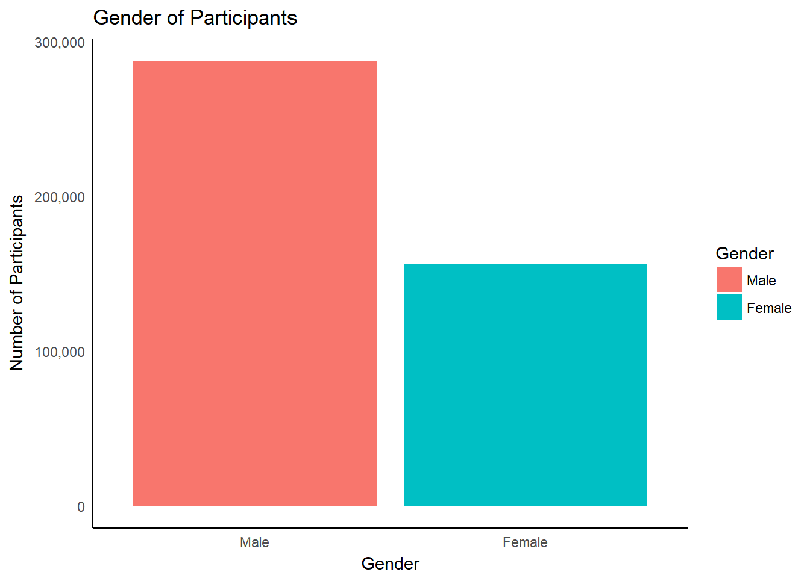
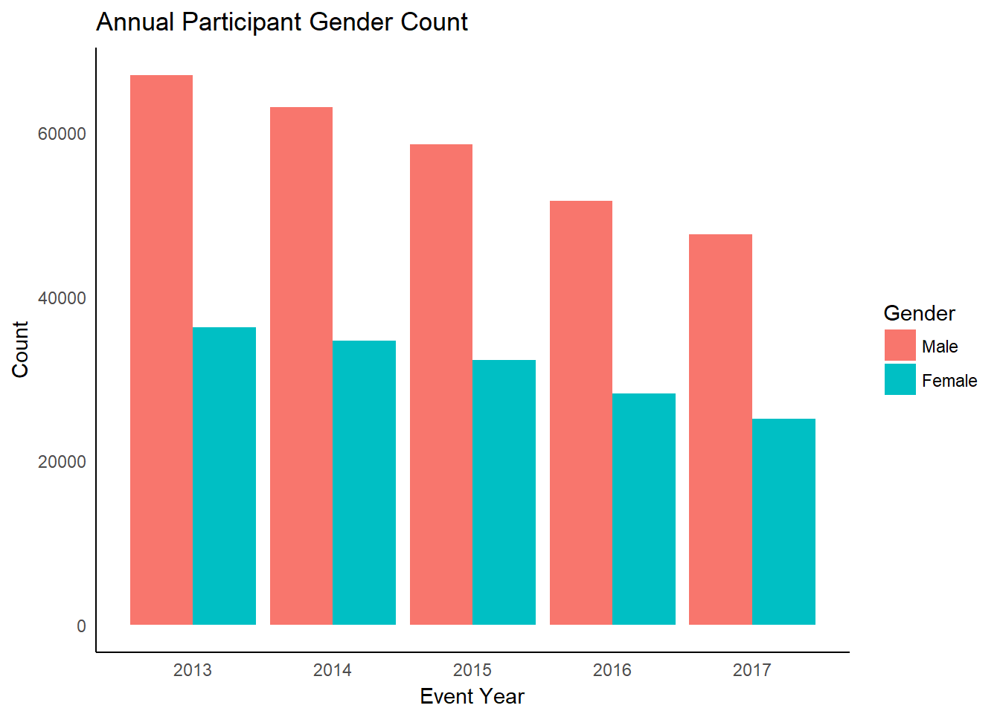
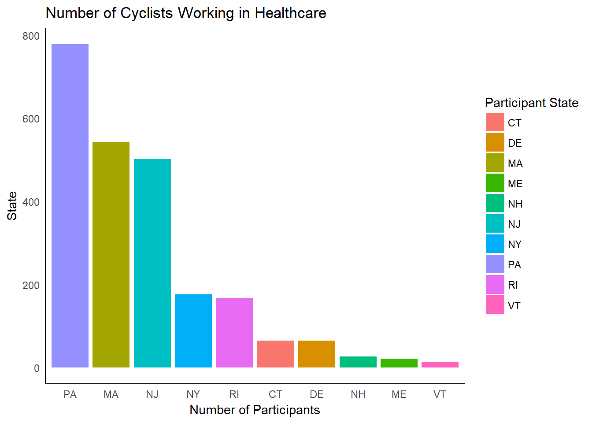

FinalReport
Introduction
Multiple Sclerosis defined by the National Multiple Sclerosis Society1(NMSS):
“…involves an immune-mediated process in which an abnormal response of the body’s immune system is directed against the central nervous system (CNS), which is made up of the brain, spinal cord and optic nerves. The exact antigen — or target that the immune cells are sensitized to attack — remains unknown, which is why MS is considered by many experts to be ‘immune-mediated’ rather than ‘autoimmune’”
Data on the prevalence of MS is extremely difficult to find, mainly because it is not consistently reported or required to be reported in the United States. However, the NMSS trust 2008-2012 estimated prevalence at around 400,000 @MSprevalence. Furthermore, a new study is expected to be released this year which estimates MS incidence and prevalence to be around 1 million in the United States2. Understanding MS prevalence and those affected by it is critical to answering why someone would want to join one of the largest cycling fundraiser in the United States, Bike MS.
Insurance data was collected from 2008 to 2012 and analyzed by the American Academy of Neurology. The standard prevalence metric is number of MS patients out of 100,000. There are some interesting trends looking at gender and geospatial demographics, which could lead to engaging a population that might be willing to help increase the number of participants/cyclists and donators. First, approximately 224 out of 100,000 women report living with MS – compared to just 72 out of 100,000 men. Second, the Eastern Region of the United States has the highst reported population of insured individuals with MS with 192 out of 100,000 – as opposed to 111 our of 100,000 in the Western Region. With this information, we as analysts can begin generating potential solutions for the decreasing number of participants and fundraising efforts for Bike MS.
Business Questions
What are the greatest growth opportunities for new corporate teams?
Bike MS has reported that corporate teams with 10+ members are their key to a successful season of fundraising. They also have a goal of increasing active registration by almost 9% from 2017 Last year, they had 74,000 riders and a total of 6,150 teams. Their goal for 2018 is 80,572 riders (40,000 new who have not participated within the last five years), and 6,489 teams.. On the Bike MS Business Questions page3, justification for targeting corporate teams:
“Because of participant demographics (mostly male, middle age, higher income earners), we know that Bike MS is an ideal corporate event and that corporate teams of 10 or more cyclists are seven times more valuable than any other kind of team. Companies with a large professional employee base, especially those with a corporate culture of health and wellness – regardless of industry – are key prospects”
Now we have looked at donations from Fortune 1000 companies and estimate that their contribution is not as significant as they might think ….etc etc [plug in Konrad’s work]
There is no doubt that corporate teams have a large role to play in the success of Bike MS, by bringing characteristics like corporate donation matching, inter-company competition, large teams, and the localization of generally wealthy individuals. However, In 2017 there were a total of 28.8 million registered small businesses in the United States, with anywhere from 1 to 5,000 employees @SBA. To find specific corporations that fit the bill of the most successful existing Bike MS corporations might be a perfectly good way of going about answering this question, but in my opinion extremely onerous and potentially yield the same fleeting results each event is experiencing now. Here is where the introductory information can be used to our advantage. Instead, maybe we should be thinking from the perspective of a potential donor. What would make yourself a donor of one fundraiser over another? There is a huge number of illnesses that impact larger populations of the United States than the estimated 1 million individuals living with MS. My best guess is that donors, riders, and volunteers are propelled to Bike MS because of the personal impact it has had on their own life. These are data-driven insights - not just assumptions:
participants$`Participant Connection to MS`[grep("MS", participants$`Participant Connection to MS`)] <- "Direct Connection to MS"
participants$`Participant Connection to MS`[grep("Other|other|Relative: Other", participants$`Participant Connection to MS`)] <- "Other"
participants$`Participant Connection to MS`[grep("Blank|None|No connection|NA", participants$`Participant Connection to MS`)] <- "None"
participants$`Participant Connection to MS` <- as.factor(participants$`Participant Connection to MS`)
bad.states <- c("Dallas", "Alicante", "Ardmore", "Austin", "Canyon Lake", "Columbia Heights", "Edinburg", "Greendale", "Houston",
"Katy", "Midwest City", "Minneapolis", "Morristown", "Newport", "None", "Ridgefield Park", "west haven")
bad.state.rows <- which(participants$`Address - Participant State/Province` %in% bad.states)
participants <- participants[-bad.state.rows, ]
connect.ms.state <- participants %>%
select(`Address - Participant State/Province`, `Participant Connection to MS`, `Participant Occupation`) %>%
filter(`Address - Participant State/Province` %in% filt.top.state) %>%
group_by(`Address - Participant State/Province`, `Participant Connection to MS`) %>%
tally(!is.na(`Participant Connection to MS`))
connect.ms.state <- connect.ms.state[complete.cases(connect.ms.state), ]connection.viz <- ggplot(connect.ms.state, aes(x = connect.ms.state$`Address - Participant State/Province`, y = `n`,
fill = `Participant Connection to MS`)) +
geom_bar(stat = "identity")
connection.viz +
theme(axis.text.x = element_text(angle = 90, vjust = 0.5)) +
labs(y = "Number of Participants",
x = "Participant State",
title = "Participant Connection to MS per State")
In the most popular states, there are consistently high numbers of participants with direct connections to MS
We already know that on average individuals with the highest risk of developing MS are women in the Eastern Region of the United States. Knowing that on average participants have a personal connection to MS, encouraging populations where prevalence is high can actually make a difference. Understanding and building out a profile for the average participant can prove to be valuable - let’s take a look at some general stats about our riders starting with where the majority of participants are coming from.
tree.city <- ggplot(top.city, aes(area = Count, fill = Count, label = City)) +
geom_treemap()+
geom_treemap_text(fontface = "italic", colour = "white", place = "centre",
grow = TRUE)
tree.city
Tree map of where the most participants are coming from (the city map).
tree.state <- ggplot(top.state, aes(area = Count, fill = Count, label = State)) +
geom_treemap()+
geom_treemap_text(fontface = "italic", colour = "white", place = "centre",
grow = TRUE)
tree.state
Tree map of where the most participants are coming from (the state map).
Let’s compare MS prevalence with the tree maps above to quickly see if we are on track with our assumption that where MS prevalence is high, we will see great participation. 
# make a data frame of gender counts to make visualizing easier
gender.df <- as.data.frame(table(participants$`Participant Gender`))
colnames(gender.df) <- c("Gender", "Count")
glimpse(gender.df)## Observations: 2
## Variables: 2
## $ Gender <fct> Male, Female
## $ Count <int> 287795, 156488gender.overall <- kable(gender.df, caption = 'Participant gender over all years')
# visualize gender counts
gender.viz <- ggplot(gender.df, aes(x = Gender, y = Count, fill = Gender)) +
geom_bar(stat = "identity")
gender.viz +
labs(x = "Gender",
y = "Number of Participants",
title = "Gender of Participants") +
scale_y_continuous(labels = c(0, '100,000', '200,000', '300,000'))
gender.overall| Gender | Count |
|---|---|
| Male | 287795 |
| Female | 156488 |

gender.k <- kable(gender.y, caption = 'Participant gender since 2013')
g.year.viz <- ggplot(data = gender.year,
aes(x = Year, y = Count, fill = Gender)) +
geom_bar(stat = "identity", position = "dodge")
g.year.viz +
labs(title = "Annual Participant Gender Count") +
labs(x = "Event Year") +
labs(y = "Count")
gender.k| Gender | 2013 | 2014 | 2015 | 2016 | 2017 |
|---|---|---|---|---|---|
| Male | 67008 | 63082 | 58553 | 51641 | 47587 |
| Female | 36241 | 34643 | 32301 | 28212 | 25112 |

Just as Bike MS had briefed us, the average participant is male. Maybe we assume that, in general, more men than women cycle. However, in 2015 PeopleforBikes.org conducted a U.S. Bicycling Participation Survey and found that from a sample of 16,000 citizens 43% of women reported participating in cycling activities. Bike MS is missing out on targeting the female demographic, which also happens to have the highest prevalence and incidence of MS. Is there a particular industry women contribute to most in the workforce?
| Participant Occupation | 2013 | 2014 | 2015 | 2016 | 2017 |
|---|---|---|---|---|---|
| Healthcare | 2251 | 2074 | 1888 | 1525 | 1305 |
| Education and Training | 1212 | 1160 | 1092 | 815 | 701 |
| Accounting | 674 | 644 | 604 | 447 | 419 |
| Student | 516 | 445 | 434 | 287 | 242 |
| Sales | 510 | 474 | 429 | 342 | 273 |
| Engineering | 457 | 497 | 504 | 319 | 260 |
| Information Technology (IT) | 410 | 383 | 371 | 297 | 267 |
| Legal and Paralegal | 397 | 399 | 364 | 248 | 206 |
| Marketing | 385 | 413 | 375 | 266 | 223 |
| Executive/Management | 343 | 332 | 299 | 247 | 209 |
It appears women have the highest number of cyclists working in the healthcare industry. There is a common theme that connects each of the first priority business questions, which is generated by addressing greatest growth opportunites for corporate teams. Furthermore, our recommendation is to target corporations located in the East Coast specifically those operating in the healthcare sector. According to Business Insider, in 22 states Walmart is the largest employer, many of which are within easy travel distance from the most successful Bike MS events. More importantly, six out of the ten states defined as Eastern Region (highest overall MS prevalence) have Healthcare listed as its largest employer - Pennsylvania, Vermont, Rhode Island, Massachusetts, Connecticut, and Delaware. Can we tell if healthcare is represented in the Eastern Region?

The data shows us that only three of the six states who have Healthcare listed as their largest employer have large numbers of cyclists signing up for Bike MS events. In past years these numbers were higher, but have been steadily declining. Of the top states that participants record as their home state all of the major occupational industries are declining.
ggplot(state.occ) +
geom_point(aes(x = `Fiscal Year`, y = `n`, colour = `Participant Occupation`)) +
geom_path(aes(x = `Fiscal Year`, y = `n`, colour = `Participant Occupation`)) +
facet_wrap(~ `Address - Participant State`, scales="free_y", nrow = 2) +
theme_pander() +
theme(legend.position="right") +
theme(axis.text.x = element_text(angle = 90, vjust = 0.5)) +
labs(x = "Year",
y = "Number of Participants")A full width figure.
occupation.state <- participants
occupation.state$`Address - Participant State/Province` <- as.factor(occupation.state$`Address - Participant State/Province`)
healthcare <- occupation.state %>%
select(everything()) %>%
filter(`Participant Occupation` == "Healthcare") %>%
group_by(`Address - Participant State/Province`) %>%
tally() %>%
arrange(desc(n)) %>%
top_n(10)Can we apply those opportunities to specific rides/markets, especially our biggest events?
Bike MS has supplied us with budget information for their top 20 events. Three out of the top 20 events are located in the Eastern region where we are recommending Bike MS focus their marketing/advertising efforts. Concentration of events and date of event are of particular interest, because we will saturate the market with too many events in one area especially if they are only a couple months apart.
states <- map_data("state")
gg <- ggplot()
gg <- gg + geom_map(data=states, map=states,
aes(x=long, y=lat, map_id=region),
color="white", fill="#cccccc", size=0.5)
gg <- gg + geom_point(data=arrange(topEvents18, desc(topEvents18$Budget)),
aes(x=topEvents18$Lon, y=topEvents18$Lat, size=topEvents18$Budget),
shape=21, color="white", fill="steelblue")
gg <- gg + geom_map(data=vor_df, map=vor_df,
aes(x=long, y=lat, map_id=id),
color="#a5a5a5", fill="#FFFFFF00", size=0.5)
gg <- gg + scale_size(range=c(2, 15))
gg <- gg + coord_map("albers", lat0=30, lat1=40)
gg <- gg + theme_map()
gg <- gg + theme(legend.position="none")
gg
Voronoi of Top Events for 2018
The voronoi diagram partitions the United States into regions whose distance to the seed (in our case event) is the shortest. This allows us to see which populations should be going to which event based on distance from the event. Following our central theme, one practical recommendation is to allocate resources to boost participation in the Northeast states and in particular the states where the largest employer is operating in healthcare. Referencing a visual shown above, we would like to highlight the following states and encourage increased advertising in the following states because of the low numbers of cyclists working in healthcare. Below are top priority states with their respective state-wide largest employer.
| State | Employer |
|---|---|
| Connecticut | Yale New Haven Health System |
| Delaware | Christiana Care Health System |
| Rhode Island | Lifespan System of Hospitals |
| Vermont | The University of Vermont Medical Center |
Additionally for your reference, here are the largest employers in each state.  You will also notice that Walmart is within the target region, which would obviously be a great sponsor.
You will also notice that Walmart is within the target region, which would obviously be a great sponsor.
east.health.viz <- ggplot(east.health, aes(x = reorder(`Participant State`, -Count),
y = `Count`,
fill = `Participant State`)) +
geom_bar(stat = "identity")
east.health.viz +
labs(x = "Number of Participants",
y = "State",
title = "Number of Cyclists Working in Healthcare Within the Target Region")
Appendix Material
Link to the press release from NMSS(https://www.nationalmssociety.org/About-the-Society/News/Preliminary-Results-of-MS-Prevalence-Study)↩
Visit TUN Data Challenge homepage to look at business questions and competition info TUN Data Challenge 2018↩